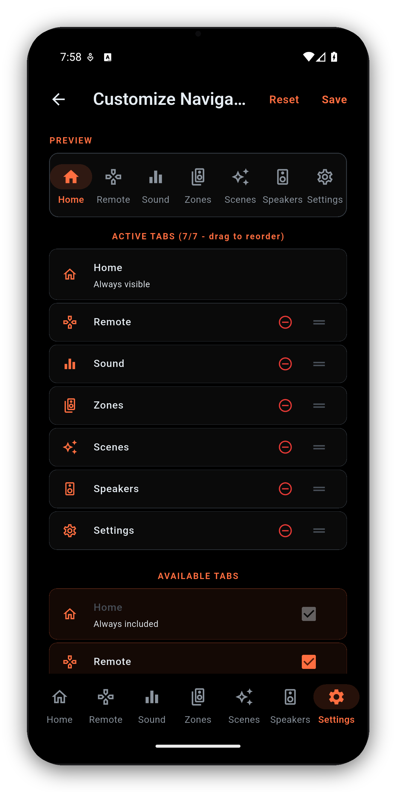
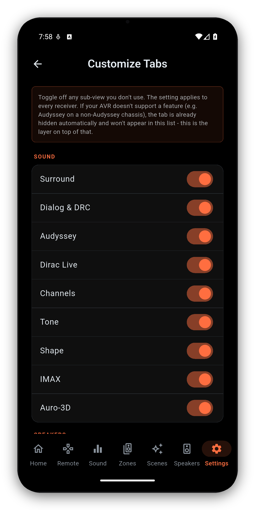

How to move around AVR Maestro: the bottom tabs and how to change them, swiping between pages, what a tap and a long press do, the Back button, the update prompt, messages, and keyboard shortcuts on a computer.



The bar at the bottom of the screen holds your main tabs. Out of the box they are Home, Remote, Sound, Zones, Scenes, Speakers and Settings. Radio can be added too. A search button sits at the right end of the bar on every tab (see Search).
The Sound, Speakers and Remote tabs each have a row of sub-tabs along the top, such as Audyssey, Dirac Live, Graphic EQ, Channels and Tone on Sound.
In the guided Scene creator, the Welcome & Setup Guide and the Home Assistant sign-in page, swipe in from the left edge of the screen to go back one step. In right-to-left languages, swipe in from the right edge. Swipe more than halfway across, or flick quickly.
Many controls do one thing on a tap and something else when you press and hold.
When a newer version of AVR Maestro is published, the Home screen shows Update available.
Use Ctrl on Windows or Cmd on Mac with:
The media keys on a keyboard (play, pause, next, previous, stop, volume and mute) work too.
Getting started · Manage receivers · Search · Home Screen · Volume Controls · Remote · Zones · Now Playing & HEOS · Radio (FM/AM) · Scenes · Sound · Graphic EQ · Speakers · Why a control is locked · Settings · Widgets · Custom Icons · On-Screen Display · Languages · The Assistant · Home Automation · Home Assistant dashboard · Backup & Restore · Glossary